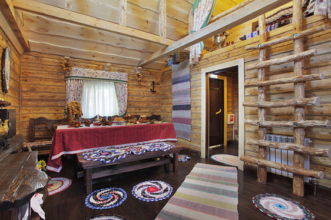

Очень-очень большой заголовок первого уровня
«Чапаевские бани» в г. Екатеринбурге – гостеприимный банно-оздоровительный комплекс, расположенный на 9 км. Сибирского тракта. Уютные банные домики, оборудованные в лучших традициях русской бани, встречают посетителей ароматом натурального сруба, березовыми дровами, особой атмосферой исконного деревенского парения. Структуру комплекса составляют 11 уникальных построек, переступив порог которых легко очутиться в рыбацкой избушке, боярских палатах или просторных комнатах царского терема. Настоящий рай для ценителей традиций и легкого пара!
Русские бани в Екатеринбурге построены по всем традиционным правилам и канонам: помещения срубов имеют две части – предбанные покои и комнату для парилки. Гостей встречает уютный, стилизованный под старину интерьер, бревенчатая парная с каменной печью и мягким настилом из ароматного и пряного сена.
Гостевые комнаты обставлены со славянским колоритом и включают все необходимое для комфортного времяпровождения отдыхающих.
Средний заголовок второго уровня
Мы ценим дружбу и общение, стараемся развивать семейные традиции. Организация уникальные мероприятия для всей самьи и участвуем в социальных проектах. Вы можете купить билет на любое мероприятие или заказать проведение своего. Гостевые комнаты обставлены со славянским колоритом и включают все необходимое для комфортного времяпровождения отдыхающих.
- Живописная обстановка – банные домики расположены в спокойном и тихом уголке зеленой рощи, за пределами шумного мегаполиса.
- Уютные гостевые комнаты с теле/радио аппаратурой, комфортной меблировкой и обеденной зоной. У нас можно поиграть в бильярд, приготовить барбекю на тенистой террасе и расслабиться под треск поленьев камина.
- Доступные и вариативные цены – наши русские бани в Екатеринбурге отличает демократичная стоимость, радушная система акций и спецпредложений.
Стремитесь полноценно отдохнуть от городской суеты, провести время с пользой для здоровья и настроения – добро пожаловать в традиционные русские бани Екатеринбурга на Сибирском тракте! Забронировать банный домик можно по телефонам или на сайте онлайн.
Небольшой заголовок третьего уровня
Мы ценим дружбу и общение, стараемся развивать семейные традиции. Организация уникальные мероприятия для всей самьи и участвуем в социальных проектах. Настоящая русская баня на дровах в Екатеринбурге – отличное место, в котором комфортно отдохнуть всей семьей, провести деловые переговоры или просто расслабиться в приятной компании.
| Баня | Кол-во гостей | Стоимость |
|---|---|---|
| Рыбацкая | до 6-ти человек | от 1600 р/час |
| Охотничья | до 6-ти человек | от 1600 р/час |
| Сибирская | до 8-ми человек | от 1900 р/час |
| Славянская | до 10-ти человек | от 2100 р/час |
| Чапаевская | до 10-ти человек | от 2100 р/час |
Вы можете купить билет на любое мероприятие или заказать проведение своего. Гостевые комнаты обставлены со славянским колоритом и включают все необходимое для комфортного времяпровождения отдыхающих. Стремитесь полноценно отдохнуть от городской суеты, провести время с пользой для здоровья и настроения – добро пожаловать в традиционные русские бани Екатеринбурга на Сибирском тракте! Забронировать банный домик можно по телефонам или на сайте онлайн.